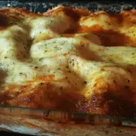

Lasagna Recipe

This is a delicious lasagna recipe from the allrecipes website.
Nutrition Facts
Per serving: 538 calories; 34.8g protein; carbohydrates 36.5g; fat 28.6g; cholesterol 125.7mg; sodium 743.2mg.
Ingredients
- 1 lb lean ground beef
- 1 onion, chopped
- 1 green bell pepper, chopped
- 1 teaspoon Italian seasoning
- salt and pepper to taste
- 1 (6 oz) cans tomato paste
- 2 1/4 cups of water
- 1 pint part-skim ricotta cheese
- 1 egg
- 2 cups shredded mozzarella cheese
- 8 lasagna noodles, cooked and drained
Steps
- Brown meat with onions and bell peppers, and season to taste. Add tomato paste and water. Let simmer.
- In a mixing bowl, mix ricotta cheese with beaten egg. Set aside.
- Prehead oven to 370 degrees F. Butter a 9x13 in baking dish.
- Begin layering all ingredients beginning with a few spoonfuls of tomato sauce.
Follow with noodles, then ricotta mixture, and shredded mozzarella.
Repeat until dish is filled.
- Bake at 375 degress F for 35-45 minutes. Let cool a few minutes till serving.